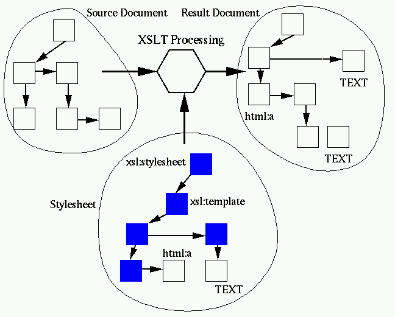
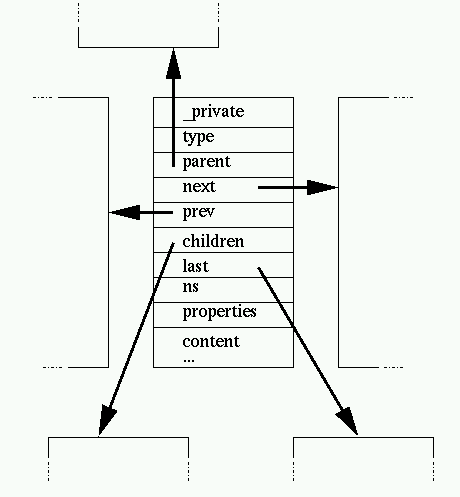
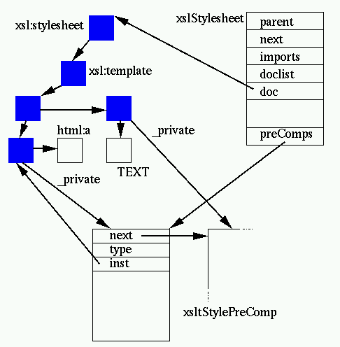
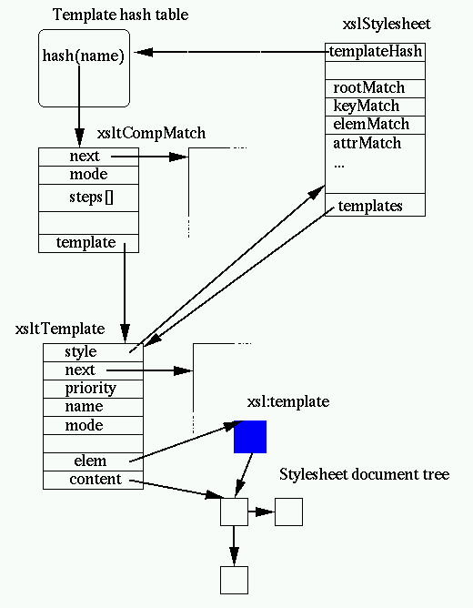
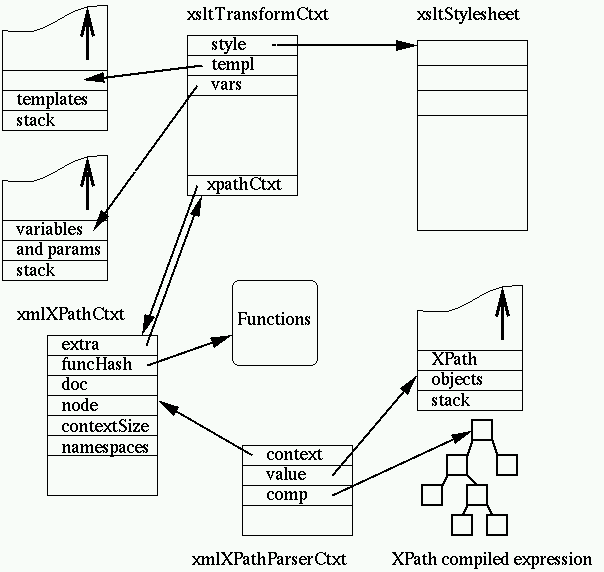
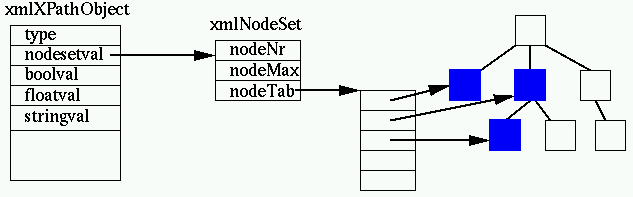

Table of contentsThis document describes the processing of libxslt, the XSLT C library developed for the GNOME project. Note: this documentation is by definition incomplete and I am not good at
spelling, grammar, so patches and suggestions are really welcome. XSLT is a transformation language. It takes an input document and a
stylesheet document and generates an output document:  Libxslt is written in C. It relies on libxml, the XML C library for GNOME, for
the following operations:
- parsing files
- building the in-memory DOM structure associated with the documents
handled
- the XPath implementation
- serializing back the result document to XML and HTML. (Text is handled
directly.)
Libxslt is not very specialized. It is built under the assumption that all
nodes from the source and output document can fit in the virtual memory of
the system. There is a big trade-off there. It is fine for reasonably sized
documents but may not be suitable for large sets of data. The gain is that it
can be used in a relatively versatile way. The input or output may never be
serialized, but the size of documents it can handle are limited by the size
of the memory available. More specialized memory handling approaches are possible, like building
the input tree from a serialization progressively as it is consumed,
factoring repetitive patterns, or even on-the-fly generation of the output as
the input is parsed but it is possible only for a limited subset of the
stylesheets. In general the implementation of libxslt follows the following
pattern:
- KISS (keep it simple stupid)
- when there is a clear bottleneck optimize on top of this simple
framework and refine only as much as is needed to reach the expected
result
The result is not that bad, clearly one can do a better job but more
specialized too. Most optimization like building the tree on-demand would
need serious changes to the libxml XPath framework. An easy step would be to
serialize the output directly (or call a set of SAX-like output handler to
keep this a flexible interface) and hence avoid the memory consumption of the
result. DOM-like trees, as used and generated by libxml and libxslt, are
relatively complex. Most node types follow the given structure except a few
variations depending on the node type:  Nodes carry a name and the node type
indicates the kind of node it represents, the most common ones are:
- document nodes
- element nodes
- text nodes
For the XSLT processing, entity nodes should not be generated (i.e. they
should be replaced by their content). Most nodes also contains the following
"navigation" information:
- the containing document
- the parent node
- the first children node
- the last children node
- the previous sibling
- the following sibling (next)
Elements nodes carries the list of attributes in the properties, an
attribute itself holds the navigation pointers and the children list (the
attribute value is not represented as a simple string to allow usage of
entities references). The ns points to the namespace declaration for the
namespace associated to the node, nsDef is the linked list
of namespace declaration present on element nodes. Most nodes also carry an _private pointer which can be
used by the application to hold specific data on this node. There are a few steps which are clearly decoupled at the interface
level:
- parse the stylesheet and generate a DOM tree
- take the stylesheet tree and build a compiled version of it (the
compilation phase)
- take the input and generate a DOM tree
- process the stylesheet against the input tree and generate an output
tree
- serialize the output tree
A few things should be noted here:
- the steps 1/ 3/ and 5/ are optional: the DOM representing the
stylesheet and input can be created by other means, not just by parsing
serialized XML documents, and similarly the result tree DOM can be
made available to other processeswithout being serialized.
- the stylesheet obtained at 2/ can be reused by multiple processing 4/
(and this should also work in threaded programs)
- the tree provided in 2/ should never be freed using xmlFreeDoc, but by
freeing the stylesheet.
- the input tree created in step 3/ is not modified except the
_private field which may be used for labelling keys if used by the
stylesheet. It's not modified at all in step 4/ to allow parallel
processing using a shared precompiled stylesheet.
This is the second step described. It takes a stylesheet tree, and
"compiles" it. This associates to each node a structure stored in the
_private field and containing information computed in the stylesheet:  One xsltStylesheet structure is generated per document parsed for the
stylesheet. XSLT documents allow includes and imports of other documents,
imports are stored in the imports list (hence keeping the
tree hierarchy of includes which is very important for a proper XSLT
processing model) and includes are stored in the doclist
list. An imported stylesheet has a parent link to allow browsing of the
tree. The DOM tree associated to the document is stored in doc.
It is preprocessed to remove ignorable empty nodes and all the nodes in the
XSLT namespace are subject to precomputing. This usually consist of
extracting all the context information from the context tree (attributes,
namespaces, XPath expressions), and storing them in an xsltStylePreComp
structure associated to the _private field of the node. A couple of notable exceptions to this are XSLT template nodes (more on
this later) and attribute value templates. If they are actually templates,
the value cannot be computed at compilation time. (Some preprocessing could
be done like isolation and preparsing of the XPath subexpressions but it's
not done, yet.) The xsltStylePreComp structure also allows storing of the precompiled form
of an XPath expression that can be associated to an XSLT element (more on
this later). A proper handling of templates lookup is one of the keys of fast XSLT
processing. (Given a node in the source document this is the process of
finding which templates should be applied to this node.) Libxslt follows the
hint suggested in the 5.2
Patterns section of the XSLT Recommendation, i.e. it doesn't evaluate it
as an XPath expression but tokenizes it and compiles it as a set of rules to
be evaluated on a candidate node. There usually is an indication of the node
name in the last step of this evaluation and this is used as a key check for
the match. As a result libxslt builds a relatively more complex set of
structures for the templates:  Let's describe a bit more closely what is built. First the xsltStylesheet
structure holds a pointer to the template hash table. All the XSLT patterns
compiled in this stylesheet are indexed by the value of the the target
element (or attribute, pi ...) name, so when a element or an attribute "foo"
needs to be processed the lookup is done using the name as a key. Each of the patterns is compiled into an xsltCompMatch
(i.e. an ''XSLT compiled match') structure. It holds
the set of rules based on the tokenization of the pattern stored in reverse
order (matching is easier this way). The xsltCompMatch are then stored in the hash table, the clash list is
itself sorted by priority of the template to implement "naturally" the XSLT
priority rules. Associated to the compiled pattern is the xsltTemplate itself containing
the information required for the processing of the pattern including, of
course, a pointer to the list of elements used for building the pattern
result. Last but not least a number of patterns do not fit in the hash table
because they are not associated to a name, this is the case for patterns
applying to the root, any element, any attributes, text nodes, pi nodes, keys
etc. Those are stored independently in the stylesheet structure as separate
linked lists of xsltCompMatch. The processing is defined by the XSLT specification (the basis of the
algorithm is explained in the Introduction
section). Basically it works by taking the root of the input document
as the cureent node and applying the following algorithm:
- Finding the template applying to current node.
This is a lookup in the template hash table, walking the hash list until
the node satisfies all the steps of the pattern, then checking the
appropriate global template(s) (i.e. templates applying to a node type)
to see if there isn't a higher priority rule to apply
- If there is no template, apply the default rule (recurse on the
children as the current node)
- else walk the content list of the selected templates, for each of them:
- if the node is in the XSLT namespace then the node has a _private
field pointing to the preprocessed values, jump to the specific
code
- if the node is in an extension namespace, look up the associated
behavior
- otherwise copy the node.
The closure is usually done through the XSLT
apply-templatesconstruct, which invokes this process
recursively starting at step 1, to find the appropriate template
for the nodes selected by the 'select' attribute of the apply-templates
instruction (default: the children of the node currently being
processed)
Note that large parts of the input tree may not be processed by a given
stylesheet and that conversely some may be processed multiple times.
(This often is the case when a Table of Contents is built). The module transform.c is the one implementing most of this
logic. xsltApplyStylesheet() is the entry point, it
allocates an xsltTransformContext containing the following:
- a pointer to the stylesheet being processed
- a stack of templates
- a stack of variables and parameters
- an XPath context
- the template mode
- current document
- current input node
- current selected node list
- the current insertion points in the output document
- a couple of hash tables for extension elements and functions
Then a new document gets allocated (HTML or XML depending on the type of
output), the user parameters and global variables and parameters are
evaluated. Then xsltProcessOneNode() which implements the
1-2-3 algorithm is called on the docuemnt node of the input. Step 1/ is
implemented by calling xsltGetTemplate(), step 2/ is
implemented by xsltDefaultProcessOneNode() and step 3/ is
implemented by xsltApplyOneTemplate(). The XPath support is actually implemented in the libxml module (where it
is reused by the XPointer implementation). XPath is a relatively classic
expression language. The only uncommon feature is that it is working on XML
trees and hence has specific syntax and types to handle them. XPath expressions are compiled using xmlXPathCompile().
It will take an expression string in input and generate a structure
containing the parsed expression tree, for example the expression: /doc/chapter[title='Introduction'] will be compiled as Compiled Expression : 10 elements
SORT
COLLECT 'child' 'name' 'node' chapter
COLLECT 'child' 'name' 'node' doc
ROOT
PREDICATE
SORT
EQUAL =
COLLECT 'child' 'name' 'node' title
NODE
ELEM Object is a string : Introduction
COLLECT 'child' 'name' 'node' title
NODEThis can be tested using the testXPath command (in the
libxml codebase) using the --tree option. Again, the KISS approach is used. No optimization is done. This could be
an interesting thing to add. Michael
Kay describes a lot of possible and interesting optimizations done in
Saxon which would be possible at this level. I'm unsure they would provide
much gain since the expressions tends to be relatively simple in general and
stylesheets are still hand generated. Optimizations at the interpretation
sounds likely to be more efficient. The interpreter is implemented by xmlXPathCompiledEval()
which is the front-end to xmlXPathCompOpEval() the function
implementing the evaluation of the expression tree. This evaluation follows
the KISS approach again. It's recursive and calls
xmlXPathNodeCollectAndTest() to collect a set of nodes when
evaluating a COLLECT node. An evaluation is done within the framework of an XPath context stored in
an xmlXPathContext structure, in the framework of a
transformation the context is maintained within the XSLT context. Its content
follows the requirements from the XPath specification:
- the current document
- the current node
- a hash table of defined variables (but not used by XSLT,
which uses its own stack frame for variables, described below)
- a hash table of defined functions
- the proximity position (the place of the node in the current node
list)
- the context size (the size of the current node list)
- the array of namespace declarations in scope (there also is a namespace
hash table but it is not used in the XSLT transformation).
For the purpose of XSLT an extra pointer has been added
allowing to retrieve the XSLT transformation context. When an XPath
evaluation is about to be performed, an XPath parser context is allocated
containing an XPath object stack (this is actually an XPath evaluation
context, this is a relic of the time where there was no separate parsing and
evaluation phase in the XPath implementation). Here is an overview of the set
of contexts associated to an XPath evaluation within an XSLT
transformation:  Clearly this is a bit too complex and confusing and should be refactored
at the next set of binary incompatible releases of libxml. For example the
xmlXPathCtxt has a lot of unused parts and should probably be merged with
xmlXPathParserCtxt. An XPath expression manipulates XPath objects. XPath defines the default
types boolean, numbers, strings and node sets. XSLT adds the result tree
fragment type which is basically an unmodifiable node set. Implementation-wise, libxml follows again a KISS approach, the
xmlXPathObject is a structure containing a type description and the various
possibilities. (Using an enum could have gained some bytes.) In the case of
node sets (or result tree fragments), it points to a separate xmlNodeSet
object which contains the list of pointers to the document nodes:  The XPath API (and
its 'internal'
part) includes a number of functions to create, copy, compare, convert or
free XPath objects. All the XPath functions available to the interpreter are registered in the
function hash table linked from the XPath context. They all share the same
signature: void xmlXPathFunc (xmlXPathParserContextPtr ctxt, int nargs); The first argument is the XPath interpretation context, holding the
interpretation stack. The second argument defines the number of objects
passed on the stack for the function to consume (last argument is on top of
the stack). Basically an XPath function does the following:
- check
nargs for proper handling of errors or functions
with variable numbers of parameters
- pop the parameters from the stack using
obj =
valuePop(ctxt);
- do the function specific computation
- push the result parameter on the stack using
valuePush(ctxt,
res);
- free up the input parameters with
xmlXPathFreeObject(obj);
- return
Sometime the work can be done directly by modifying in-situ the top object
on the stack ctxt->value. Not to be confused with XPath object stack, this stack holds the XSLT
variables and parameters as they are defined through the recursive calls of
call-template, apply-templates and default templates. This is used to define
the scope of variables being called. This part seems to be one needing most work , first it is
done in a very inefficient way since the location of the variables and
parameters within the stylesheet tree is still done at run time (it really
should be done statically at compile time), and I am still unsure that my
understanding of the template variables and parameter scope is actually
right. This part of the documentation is still to be written once this part of
the code will be stable. TODO There is a separate document explaining how the
extension support works. Michael Kay wrote a
really interesting article on Saxon internals and the work he did on
performance issues. I wish I had read it before starting libxslt design (I
would probably have avoided a few mistakes and progressed faster). A lot of
the ideas in his papers should be implemented or at least tried in
libxslt. The libxml documentation, especially the I/O interfaces and the memory management. redesign the XSLT stack frame handling. Far too much work is done at
execution time. Similarly for the attribute value templates handling, at
least the embedded subexpressions ought to be precompiled. Allow output to be saved to a SAX like output (this notion of SAX like API
for output should be added directly to libxml). Implement and test some of the optimization explained by Michael Kay
especially:
- static slot allocation on the stack frame
- specific boolean interpretation of an XPath expression
- some of the sorting optimization
- Lazy evaluation of location path. (this may require more changes but
sounds really interesting. XT does this too.)
- Optimization of an expression tree (This could be done as a completely
independent module.)
Error reporting, there is a lot of case where the XSLT specification
specify that a given construct is an error are not checked adequately by
libxslt. Basically one should do a complete pass on the XSLT spec again and
add all tests to the stylesheet compilation. Using the DTD provided in the
appendix and making direct checks using the libxml validation API sounds a
good idea too (though one should take care of not raising errors for
elements/attributes in different namespaces). Double check all the places where the stylesheet compiled form might be
modified at run time (extra removal of blanks nodes, hint on the
xsltCompMatch). Thanks to Michael Sperberg-McQueen for
various fixes and clarifications on this document! Daniel Veillard |